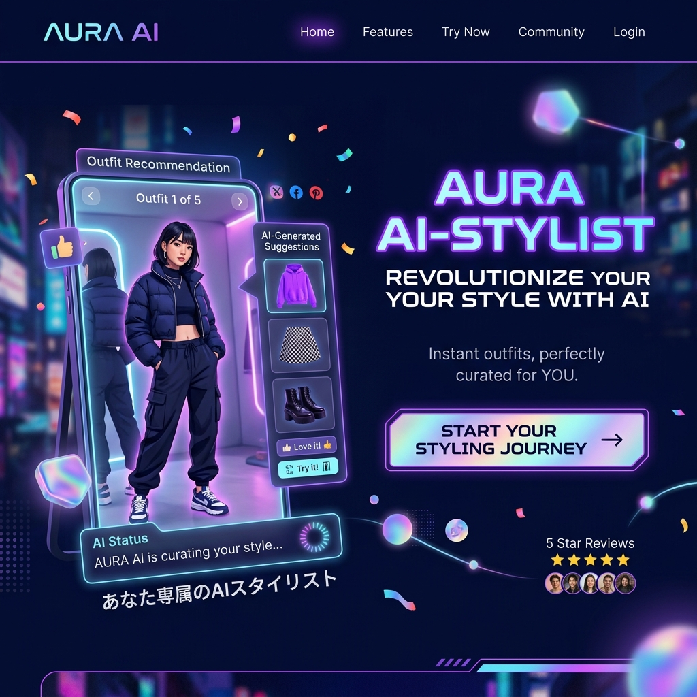

MOBILITY / DRONE LOGISTICS
「空」という名の、
「空」という名の、
渋滞のないハイウェイ。
DRONE-MARTは、過疎地から都市部まで、AIによる完全自律飛行のドローンを活用し、ラストワンマイルの配送を劇的に高速化・低コスト化する空の物流プラットフォームです。

THE DELIVERY CRISIS
崩壊寸前の「ラストワンマイル」
ネット通販の爆発的な増加に対し、配達する人間の数は圧倒的に足りていません。特に山間部や離島への配送は、採算が合わず物流網の維持が限界を迎えています。
AUTONOMOUS FLIGHT
安全を絶対的に担保する自律飛行システム
AI障害物回避機能
電線や鳥、突然の突風。飛行中に遭遇するあらゆる障害物をカメラとLiDARセンサーで瞬時に検知し、自律的にルートを変更して衝突を回避します。
耐候性ヘビー・ドローン
雨や風速15mの強風下でも安定して飛行し、最大5kgの荷物を数十キロ先まで運ぶことができる産業用の強靭な機体設計。
センチメートル単位の精密着陸
GPSだけでなく画像認識を組み合わせることで、指定された庭先のターゲットマークの上に、荷物を傷つけることなくミリ単位の精度でそっと降ろします。
UTM SYSTEM
空の交通整理「クラウド管制塔」
空を飛ぶ何千機ものドローン同士がぶつからないよう、クラウド上の管制システム（UTM）が一元管理し、最適な高度とルートをリアルタイムで割り当てます。
EMERGENCY DELIVERY
薬や血液の「命を救う」緊急輸送
山間部で急病人が出た際、救急車が到着するよりも早く、AEDや緊急用の医薬品をドローンで直送。1分1秒が命を分ける現場で真価を発揮します。
CLIENT SUCCESS
Case Study | 離島の医療ネットワーク
本土から船でしか薬を運べなかった離島。DRONE-MARTの導入により、発注からわずか30分で必要な処方薬が患者の家まで直接届くようになり、医療格差が劇的に改善されました。
OUR VISION
空を、日常のインフラへ
SF映画の中で描かれた「空飛ぶ車」や「ドローン配達」は、すでに私たちの技術によって現実のものとなっています。物流の限界を空から突破します。